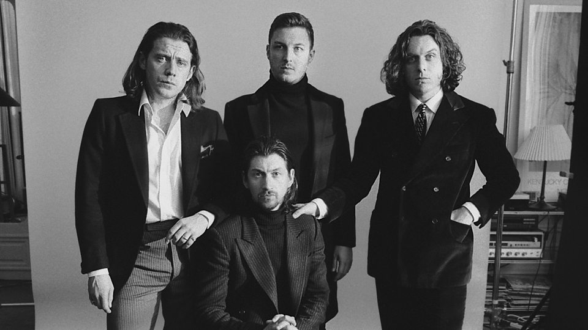

ABOUT THE ARTIST
Arctic Monkeys arrived in 2005 with a blast. Assisted by rave reviews and online word of mouth (they were one of the first bands to benefit from the tangled web of social media), the band quickly became a sensation in the United Kingdom, where they were seen as the heir apparent to the throne left vacant by Oasis, or perhaps the Libertines. (Their 2006 debut Whatever People Say I Am, That's What I'm Not briefly grabbed the title of fastest-selling album in British history.) What set the group apart was Alex Turner, a singer/songwriter with a biting wit and grasp of English vernacular (not dissimilar to Paul Weller, the godfather of modern British rock). While that particular style often fails to translate to a worldwide audience, Arctic Monkeys broke this tradition, cracking the American market not by sacrificing Turner's trademark storytelling but by beefing up their guitars (sometimes in association with Josh Homme of Queens of the Stone Age). Eventually, Arctic Monkeys laced in some of the louche lounge aspects of Turner's swinging side project the Last Shadow Puppets, but by that point, the band were a staple throughout the world: a respected, adventurous, and successful group who could easily be called Britain's biggest band of the early 21st century. Alex Turner and guitarist Jamie Cook began their music careers in 2001, when the friends both received guitars for Christmas. Two years later, they began performing shows around their native Sheffield with drummer Matt Helders and bassist Andy Nicholson, two fellow students at Stocksbridge High School. A series of demo recordings followed, and Arctic Monkeys' audience swelled as fans circulated those recordings via the Internet. The musicians soon found themselves at the center of a growing media circus, with such outlets as BBC Radio examining the band's music and mounting hype.